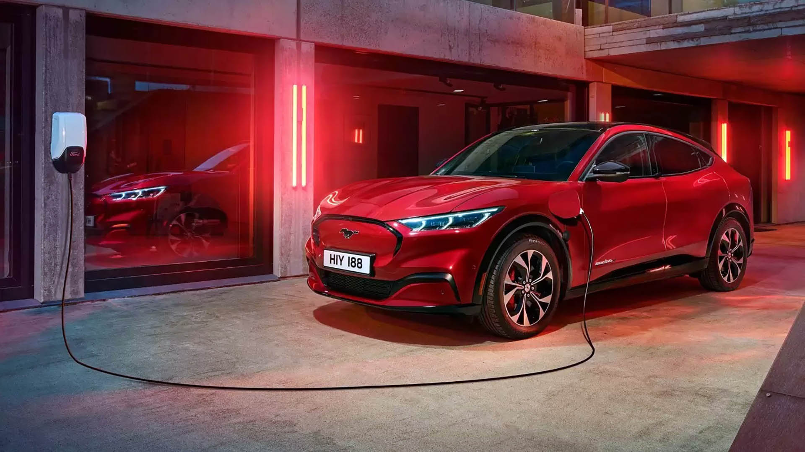
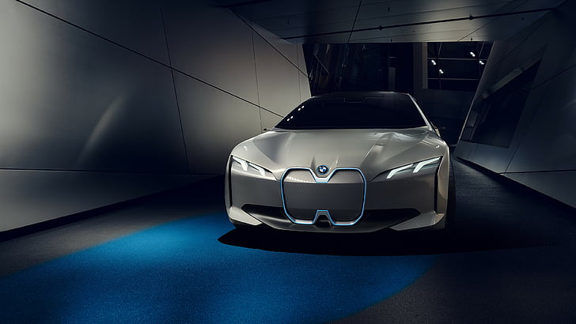

Los autos eléctricos son vehículos que utilizan motores eléctricos en lugar de motores de combustión interna que funcionan con gasolina o diésel. Estos vehículos utilizan baterías recargables para almacenar energía y alimentar el motor eléctrico, lo que les permite funcionar sin emitir gases de escape que contribuyan a la contaminación del aire.
Los autos eléctricos funcionan principalmente a través de la electricidad almacenada en baterías recargables. Aquí tienes una descripción básica de su funcionamiento:
En lugar de un motor de combustión interna que se encuentra en los automóviles tradicionales, los autos eléctricos tienen un motor eléctrico. Este motor utiliza la energía eléctrica suministrada por las baterías para generar un par de torsión que impulsa las ruedas del vehículo.
La energía para alimentar el motor eléctrico proviene de baterías recargables instaladas en el automóvil. Estas baterías almacenan electricidad y pueden ser recargadas en estaciones de carga o mediante un enchufe en casa.
Un controlador electrónico gestiona la energía de las baterías y controla la velocidad y el par de torsión entregado por el motor eléctrico. Regula la potencia que se envía al motor en función de la aceleración y otros comandos del conductor.
Los autos eléctricos se recargan mediante un sistema de carga conectado a la red eléctrica. Pueden recargarse en casa, en estaciones de carga públicas o en estaciones de carga rápida que permiten una recarga más rápida de las baterías.
Muchos autos eléctricos están equipados con un sistema de frenado regenerativo. Cuando el conductor frena, el motor eléctrico actúa como un generador y convierte la energía cinética en electricidad, que se devuelve a las baterías para recargarlas y aumentar la eficiencia.
Los autos eléctricos suelen estar equipados con pantallas e interfaces digitales que permiten al conductor monitorear el nivel de carga de las baterías, la autonomía restante y otros datos relevantes.
La autonomía de un auto eléctrico se refiere a la distancia que puede recorrer con una carga completa de su batería. La autonomía puede variar significativamente según varios factores:
Cuanta más energía pueda almacenar la batería, mayor será la autonomía. Las baterías de autos eléctricos generalmente se miden en kilovatios-hora (kWh).
Las baterías de iones de litio son las más comunes en autos eléctricos, pero diferentes químicas y diseños pueden afectar la eficiencia y la autonomía.
El frío y el calor extremos pueden afectar la eficiencia de la batería y, por lo tanto, la autonomía.
La conducción agresiva y rápida puede reducir la autonomía, mientras que una conducción más suave y eficiente puede aumentarla.
La velocidad a la que se conduce y la topografía (subidas y bajadas) pueden influir en la autonomía.
El uso de sistemas de calefacción, aire acondicionado y otros accesorios eléctricos puede disminuir la autonomía.
La recarga de un auto eléctrico se refiere a llenar su batería con electricidad. Existen diferentes niveles y tipos de carga:
Los autos eléctricos se pueden cargar en casa utilizando un enchufe convencional (Nivel 1) o un cargador de nivel 2 que se instala en el hogar. La velocidad de carga en casa es más lenta que en estaciones públicas, pero es conveniente para la carga nocturna.
Estaciones de carga públicas, que a menudo se encuentran en estacionamientos, centros comerciales y áreas urbanas, ofrecen cargadores de nivel 2 más potentes que los de casa. Proporcionan una carga más rápida.
Estaciones de carga rápida utilizan corriente continua (DC) y pueden cargar la batería mucho más rápido que los niveles anteriores. Son útiles para viajes largos y recargas rápidas, pero no todos los vehículos admiten esta opción.
Tesla cuenta con una red de Superchargers, que son estaciones de carga ultrarrápida diseñadas específicamente para sus vehículos. Pueden proporcionar una carga significativa en poco tiempo.
La velocidad de carga varía según el nivel de carga y la capacidad del cargador. Los tiempos pueden oscilar desde unas pocas horas en cargadores de nivel 2 hasta menos de una hora en estaciones de carga rápida.
Tener en cuenta: La disponibilidad y velocidad de carga pueden variar según la ubicación y la red de carga. Además, las innovaciones en tecnología de baterías y sistemas de carga siguen mejorando la autonomía y los tiempos de recarga de los autos eléctricos.